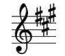
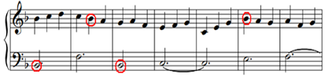
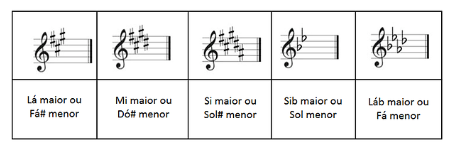
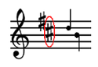
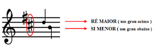
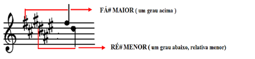
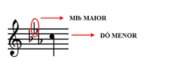

Armadura de clave é o nome dado aos acidentes (sustenidos ou bemóis) que são colocados logo depois da clave:
Esses acidentes estão no mesmo lugar das notas que irão alterar, ou seja, eles alteram todas as notas que estiverem naquela linha ou espaço. Vamos supor que você recebeu uma partitura que possui uma armadura de clave com um Si bemol (a linha que corresponde à nota Si possui um bemol). Isso quer dizer que você terá que diminuir um semitom de todas as notas “Si” que aparecerem pela frente, conforme o exemplo abaixo:
Circulamos em vermelho as notas Si nas claves de Sol e de Fá acima para destacar. Observe que nessas linhas existe um “b” indicando “bemol” na armadura de clave. Enquanto você estiver tocando, precisa manter em mente o comando da armadura.
Como descobrir a tonalidade da música olhando a armadura de clave As armaduras de clave também ajudam a revelar a tonalidade da música. Por exemplo, pense na escala de Sol maior, ela possui apenas um acidente (Fá #), certo? Logo, uma partitura que tenha Fá# em sua armadura indica que a música está em Sol maior. Veja outros exemplos:
Obs: Observe que as tonalidades podem ser menores também. Nesse caso, em vez de Sol maior, por exemplo, poderíamos ter Mi menor (sua relativa menor). Isso não se pode concluir imediatamente apenas olhando para a armadura de clave; vai depender do contexto.
Dicas para ler uma armadura de clave na prática
Talvez o que acabamos de mostrar não pareça útil se você não sabe de cor os acidentes de todas as escalas. Bem, vamos mostrar um macete então para facilitar as coisas: quando temos uma armadura com sustenidos, não importa quantos sejam, você vai descobrir a tonalidade olhando apenas para o último sustenido (obs: a ordem é da esquerda para a direita). No exemplo abaixo, esse é o último sustenido:
A tonalidade da música será um grau acima do último sustenido. No exemplo acima, o último sustenido estava na nota Dó, portanto, a tonalidade é Ré maior.
Obs: um grau é a próxima nota da linha ou espaço.
Se você quer saber a tonalidade relativa menor, basta pegar um grau abaixo desse último sustenido. No mesmo exemplo anterior, um grau abaixo de Dó é Si, portanto a tonalidade é Si menor.
Obs: Caso a nota que você encontrou tenha um acidente também na armadura de clave, você precisa aplicar esse acidente à tonalidade. Por exemplo, na armadura abaixo, o último sustenido está na nota Mi, o que nos leva a concluir que a tonalidade é Fá maior. Mas a nota Fá possui um sustenido na armadura, então a tonalidade é Fá sustenido e não Fá!
Armadura de clave com acidentes bemóis Para armaduras com bemóis a regra é ainda mais simples. O penúltimo bemol vai indicar o tom maior (acompanhado da alteração bemol) e dois graus abaixo deste tom você encontrará o tom menor:
Obs: Só há duas exceções para essas regras que mostramos. A primeira é a armadura com apenas um bemol (Sib), que indicará a tonalidade de Fá maior ou Ré menor. E a segunda é a armadura vazia que indicará a tonalidade de Dó maior ou Lá menor. Essas duas precisarão ser decoradas!
Se você observar bem as armaduras que foram mostradas até aqui, vai notar que os acidentes estão registrados seguindo uma lógica: os sustenidos aparecerem de acordo com a sequência do ciclo das quintas, começando da nota Fá. E os acidentes bemóis aparecem obedecendo ao ciclo de quartas, começando da nota Si. Na prática, saber isso só é relevante para quem for escrever uma partitura. Procure decorar os detalhes sobre armadura de clave que forem importantes para o seu propósito como músico, seja ele leitura, escrita ou ambos.